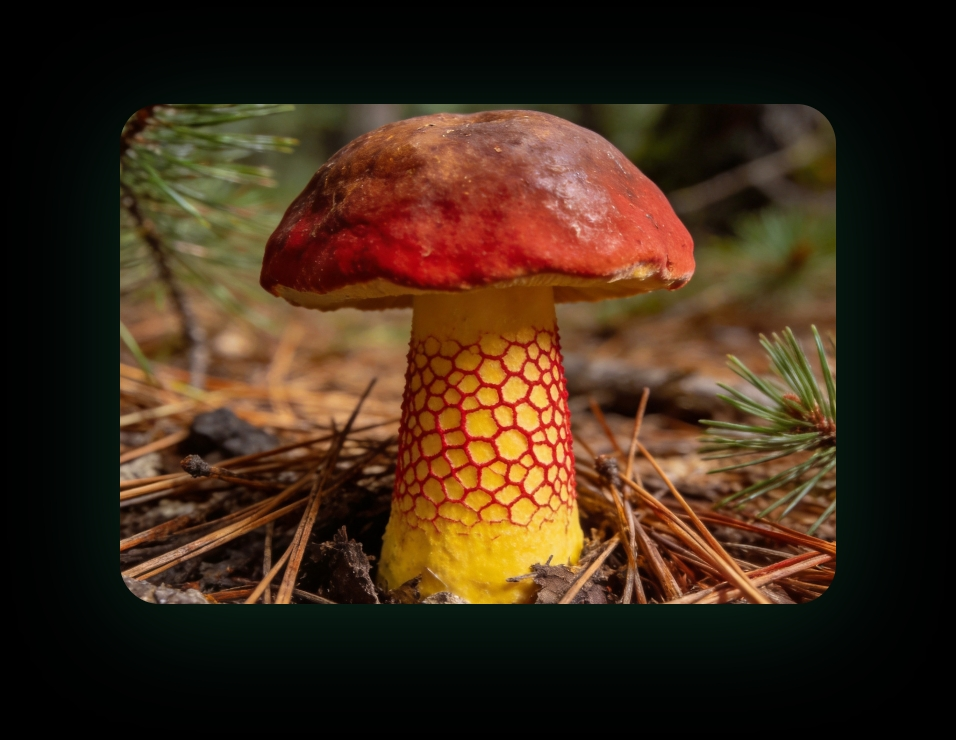

见手青
可食 · 须熟透
AI 识别置信度
96%
见手青类必须充分加热烹饪，生食或未熟透可能引起肠胃炎与致幻反应。
候选菌种 · 置信度排序
1
见手青Lanmaoa asiatica
96%
2
红孔牛肝菌Rubroboletus sinicus
78%
3
褐环乳牛肝菌Suillus luteus
61%
相似种对比 · 谨防混淆
红网牛肝菌有毒
Rubroboletus satanas
· 菌孔颜色更为鲜红 · 菌柄网纹粗大凸起 · 味苦，具胃肠炎毒性
苦粉孢牛肝菌不可食
Tylopilus felleus
· 菌肉味极苦不可食 · 菌孔成熟后呈粉褐色 · 菌柄网纹色深明显
识别依据
菌盖红褐色
菌柄黄色网纹
受伤后变蓝
针叶林生境
AI 识别结果仅供参考，野生菌食用前请务必由专业人士确认